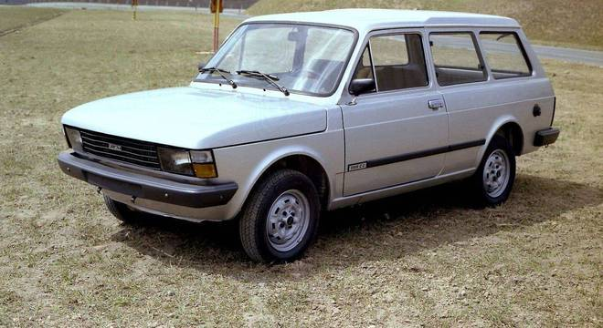

Lançada em 1980, a Fiat Panorama foi a primeira perua compacta da marca no Brasil, derivada do Fiat 147. Produzida até 1986, destacou-se pela economia, suspensão independente e ótimo espaço interno (com teto elevado na traseira), tornando-se uma opção familiar prática antes de ser substituída pela Fiat Elba.
Em 1980, depois de quatro anos de sua chegada ao mercado brasileiro, a Fiat dava um passo importante na sua história, ao se aventurava no mercado de peruas, um segmento em ebulição na época. A marca que já comercializava o icônico 147, assim como suas variações voltadas para o trabalho, a Pickup e a Furgão, apresentava ao mercado sua primeira perua compacta no Brasil, o Fiat Panorama, modelo que completa 45 anos de existência.
O Panorama chegava junto com a primeira grande reestilização do 147, a chamada linha Europa, que trazia um visual moderno, espaço interno inteligente e um desempenho urbano eficiente. Era a solução ideal para famílias e pequenos empresários que precisavam de espaço, mas não queriam abrir mão da economia e praticidade de um carro compacto.
Desenvolvido com base no Fiat 147, o Panorama era espaçoso e contava com uma grande área envidraçada, o que justificava seu nome. O modelo tinha a carroceria 18 centímetros mais longa que seu modelo de origem, além do teto elevado na seção posterior, depois dos bancos dianteiros, conferindo ao carro um espaço traseiro mais amplo e confortável.
Favorecido por manter o estepe junto ao motor, na dianteira, o modelo tinha como outro grande atributo o porta-malas, que tinha capacidade para 730 litros de volume de carga até o teto, sendo que este volume saltava para 1.440 litros, quando o banco traseiro era rebatido.
O Panorama também chegou com melhorias mecânicas como a suspensão traseira mais macia e um novo sistema de lubrificação do câmbio, que tornava o funcionamento da caixa mais suave. Com acréscimo de peso, na ordem de 25 kg, o motor escolhido para equipar o modelo foi o 1.300, que oferecia 61 cv de potência e 9,9 kgfm de torque no motor a gasolina e 62 cv de potência e 11,5 kgfm de torque com o motor a etanol.
Durante sua curta trajetória, em 1983, o Panorama passou por uma evolução. A partir daquele ano, o modelo ganhou as novidades de design que vieram com a chegada da linha Spazio, como para-choques envolventes em plástico, largas molduras laterais e painel foram totalmente reformulados. O modelo também ganhou câmbio de cinco marchas e passou a ser ofertado com duas versões de acabamento, a C e CL.
Em 1986, com a chegada da Elba, o Fiat Panorama parou de ser produzido, dando espaço para a perua derivada da linha Uno, e deixando o legado de ter aberto o caminho para a Fiat neste segmento, onde a marca teve diversos carros icônicos como a Palio Adventure, Tempra SW e Marea Weekend